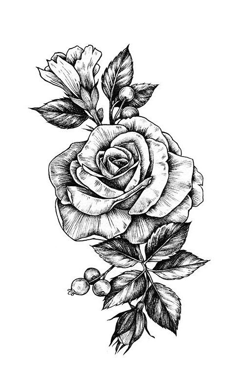
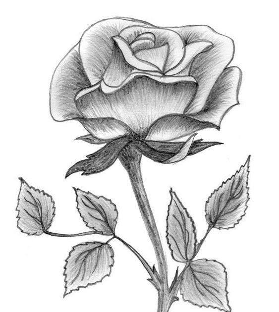

Vivamus sem nibh, fermentum a dolor maximus, maximus feugiat nibh.
Duis vel condimentum lacus. Integer euismod ligula vel turpis auctor,
a malesuada diam interdum.
 Vivamus sem nibh, fermentum a dolor maximus, maximus feugiat nibh. Duis vel condimentum lacus. Integer euismod ligula vel turpis auctor, a malesuada diam interdum.